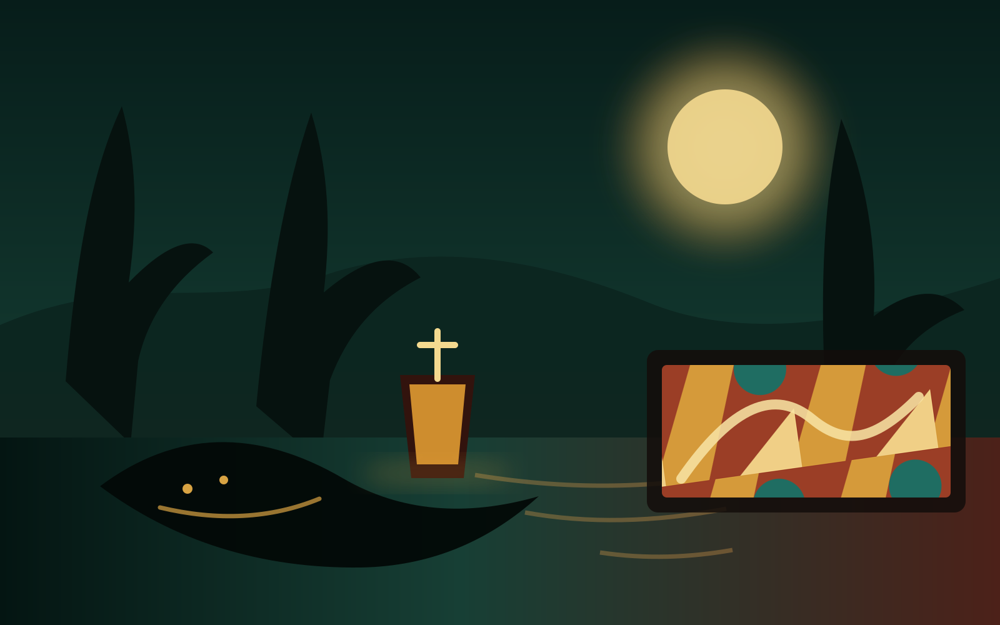

Deep flavor
Louisiana cooking is built in layers—slow color, aromatic vegetables, smoke, seafood and a confident hand with seasoning.
A warm, lively neighborhood table where bold Louisiana flavor meets the creative pulse of 36th Street.

Come as you are, settle in and follow the aroma. The experience is relaxed, generous and built for passing plates around the table.
Louisiana cooking is built in layers—slow color, aromatic vegetables, smoke, seafood and a confident hand with seasoning.
A casual stop before a show, a full dinner with friends or a late neighborhood meetup on one of Charlotte's most creative streets.
Good food lands better when nobody is rushing. Build a table, share a few bites and let the evening find its own rhythm.
Boudreaux's brings Louisiana-inspired comfort food into the middle of NoDa—surrounded by music, murals and the kind of neighborhood that rewards wandering in hungry.
Step inside the story →Start with the flavors that take time: roux, spice, smoke and a kitchen built around comfort.
Pick a table, bring the whole crew or stop in before the next show on 36th Street.
The best neighborhood meals leave room for another story, another round and nowhere else you need to be.